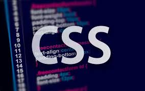

History About CSS

CSS was first proposed byHåkon Wium lie on 10 October 1994.[23] At the time, Lie was working with Tim Berners-Lee at CERN.[24] Several other style sheet languages for the web were proposed around the same time, and discussions on public mailing lists and inside World Wide Web Consortium resulted in the first W3C CSS Recommendation (CSS1)[25] being released in 1996. In particular, a proposal byBert Bos was influential; he became co-author of CSS1, and is regarded as co-creator of CSS.[26]
Style sheets have existed in one form or another since the beginnings of Standard Generalized Markup
Language

The CSS Working Group began tackling issues that had not been addressed with CSS
level 1, resulting
in the creation of CSS level 2 on November 4, 1997.It was published as a W3C Recommendation
on May 12, 1998. CSS level 3,
which was started in 1998, is still under development as of 2014.
In 2005, the CSS Working Groups decided to enforce the requirements for standards more strictly.
This meant that already published standards like CSS 2.1, CSS 3 Selectors, and CSS 3
Text were pulled back from CandidateRecommendation to Working Draft level.